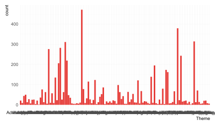
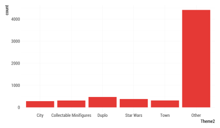
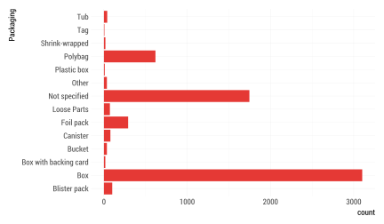
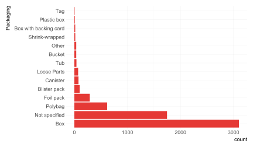
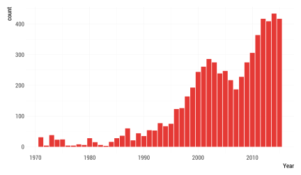
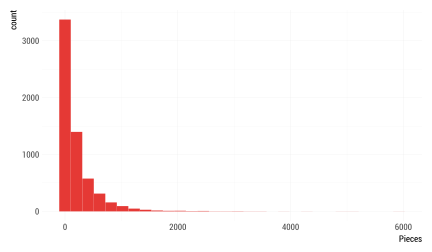
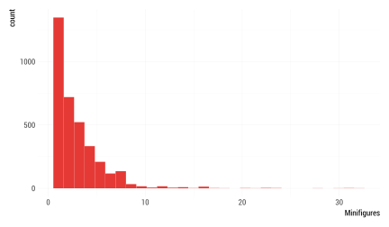

a|1e|2d|1
e|1s|2t|1a|2d|3i|2s|2t|1i|1c|2a|1
Joshua Kunst, Septiembre 2017
Que haremos?
- Introducción
- Análsis Exploratorio de Datos (AED)
- Estadística Descriptiva (ED)
- Medidas de Tendencia
- Visualización de datos
- Estudiar Ejemplos , hacer ejemplos, equivocarnos, corregirnos, vivir ejemplos
Introducción
Introducción

Fuente: R for Data Science, Wickham & Grolemund
Introducción
Antes de explicar debemos entender
El Análisis Exploratorio y la Estadística Descriptiva son parte clave para el entendimiento
Escuchar lo que los datos nos hablan
Introducción
AED y ED van de la mano.
Uno el el fin y el otro es una herramienta para lograr dicho fin.
Glosario
- Una variable es una cantidad, que puede ser medida: estatura, magnitud de un sismo, velocidad de un huracán, inteligencia (¿?)
- Un valor es un estado de la variable cuando se mide: 1.20 metros, 8° Richter
- Una observación o caso es un conjunto de mediciones -no de la misma variable necesariamente- pero si en un mismo instante y a un mismo objeto.
Glosario
- Datos tabulados es un conjunto de valores cada uno asociado a una variable y una observación

Prerequisitos
Antes de partir necesitamos:
- Entusiasmo
- Mantener la mente abierta
- Familiarizado con
ggplot2ydplyr
Análisis Exploratorio de Datos
Análisis Exploratorio de Datos
No existe definición formal con reglas a seguir. Es un estado mental
- Generar preguntas acerca de los datos
- Buscar respuestas visualizando, transformando los datos
- Hacer nuevas preguntas a partir de lo aprendido
Generar conocimiento
AED
Generar conocimiento no solo implica extraer la información que tratan de medir los datos
Este conocimiento puede estar también en conocer si los datos fueron bien medidos o existen algunos registros datos mal registrados
Validar calidad de los datos
Visualizando Distribuciones
Distribución
Distribución se relaciona a la forma que varían los datos de medición en medición.
Estudiando la forma de como se distribuyen los datos podemos ver cuales son los más comunes, o ver si exsiten casos raros
Y variará principalmente del tipo de variable analizada: categórica o continua
Dataset Legos
Leyendo datos
library(tidyverse)
legos <- read_csv("https://raw.githubusercontent.com/seankross/lego/master/data-tidy/legosets.csv")
# primer paso! paso #1
glimpse(legos)## Observations: 6,172
## Variables: 14
## $ Item_Number <chr> "10246", "10247", "10248", "10249", "10581", "105...
## $ Name <chr> "Detective's Office", "Ferris Wheel", "Ferrari F4...
## $ Year <int> 2015, 2015, 2015, 2015, 2015, 2015, 2015, 2015, 2...
## $ Theme <chr> "Advanced Models", "Advanced Models", "Advanced M...
## $ Subtheme <chr> "Modular Buildings", "Fairground", "Vehicles", "W...
## $ Pieces <int> 2262, 2464, 1158, 898, 13, 39, 32, 105, 13, 11, 5...
## $ Minifigures <int> 6, 10, NA, NA, 1, 2, 2, 3, 2, 2, 3, 1, NA, NA, NA...
## $ Image_URL <chr> "http://images.brickset.com/sets/images/10246-1.j...
## $ GBP_MSRP <dbl> 132.99, 149.99, 69.99, 59.99, 9.99, 16.99, 19.99,...
## $ USD_MSRP <dbl> 159.99, 199.99, 99.99, 79.99, 9.99, 19.99, 24.99,...
## $ CAD_MSRP <dbl> 199.99, 229.99, 119.99, NA, 12.99, 24.99, 29.99, ...
## $ EUR_MSRP <dbl> 149.99, 179.99, 89.99, 69.99, 9.99, 19.99, 24.99,...
## $ Packaging <chr> "Box", "Box", "Box", "Box", "Box", "Box", "Box", ...
## $ Availability <chr> "Retail - limited", "Retail - limited", "LEGO exc...Explorando Variables Discretas
¿Cuántos temas hay?
legos %>% count(Theme, sort = TRUE)## # A tibble: 115 x 2
## Theme n
## <chr> <int>
## 1 Duplo 471
## 2 Star Wars 379
## 3 Town 314
## 4 Collectable Minifigures 311
## 5 City 282
## 6 Bionicle 276
## 7 Technic 243
## 8 Creator 219
## 9 Castle 206
## 10 Racers 195
## # ... with 105 more rowsExplorando Variables Discretas
¿Cuántos temas hay?
ggplot(legos) +
geom_bar(aes(Theme))
Explorando Variables Discretas
¿Cuántos temas hay?
library(forcats)
legos <- mutate(legos, Theme2 = fct_lump(Theme, n = 5))
ggplot(legos) + geom_bar(aes(Theme2))
Explorando Variables Discretas
¿Cuáles son los tipos de envoltorio?
legos %>% count(Packaging, sort = TRUE)## # A tibble: 14 x 2
## Packaging n
## <chr> <int>
## 1 Box 3102
## 2 Not specified 1747
## 3 Polybag 619
## 4 Foil pack 291
## 5 Blister pack 100
## 6 Canister 78
## 7 Loose Parts 72
## 8 Tub 40
## 9 Bucket 36
## 10 Other 36
## 11 Shrink-wrapped 18
## 12 Box with backing card 17
## 13 Plastic box 10
## 14 Tag 6Explorando Variables Discretas
¿Cuáles son los tipos de embalajes?
ggplot(legos) +
geom_bar(aes(Packaging))
Explorando Variables Discretas
¿Y esas etiquetas?

Explorando Variables Discretas
¿Y esas etiquetas?
ggplot(legos) +
geom_bar(aes(Packaging)) +
coord_flip() # rotar :D
Explorando Variables Discretas
¿Y esas etiquetas?
legos <- mutate(legos, Packaging = fct_infreq(Packaging)) # ordenar
ggplot(legos) +
geom_bar(aes(Packaging)) + coord_flip() # rotar :D
Explorando Variables Continuas
¿Desde cuándo se tenemos registros de sets de legos?*
ggplot(legos) +
geom_bar(aes(Year))
Explorando Variables Continuas
¿Cuántas piezas traen los sets?
ggplot(legos) +
geom_histogram(aes(Pieces))
Explorando Variables Continuas
¿Cuántas minifuguras traen los sets?
ggplot(legos) +
geom_histogram(aes(Minifigures))
Valores comunes, valores raros
En el caso anterior, ¿Cuál es el número más comun de figuras? ¿Cuántos sets traen más de 25 figuras? ¿Cuáles son?
legos %>%
filter(Minifigures > 25) %>%
select(Name, Year, Theme, Minifigures)## # A tibble: 5 x 4
## Name Year Theme Minifigures
## <chr> <int> <chr> <int>
## 1 The Battle for Helms Deep 2013 Games 28
## 2 Star Wars: The Battle of Hoth 2012 Games 32
## 3 Community Workers 2006 Education 31
## 4 Community Workers 2005 Education 31
## 5 Community Workers 1996 Dacta 30Estadística Descriptiva
Estadística Descriptiva
Conjunto de procedimientos para resumir datos.
- Medidas de tendencia central y dispersión
- Visualización de datos
Sintetizar información
Medidas de Tendencia
Son indicadores (generalmente un número) obtenidos de los datos que resumen información y nos hablan de alguna característica de la distribución de la variable.
Medidas de Tendencia
Visualización de datos
Visualización de datos
Se refiere a la representación gráfica de los datos codificando la información o atributos como: posición, tamaño, formas, colores

Lollipop

Fuente: http://uc-r.github.io/lollipop
Ejercicio I
Datos
seismic monitor data api https://earthquake.usgs.gov/fdsnws/event/1/
Datos
library(tidyverse)
data <- read_delim("https://earthquake.usgs.gov/fdsnws/event/1/query?starttime=2017-09-01&endtime=2017-09-31&format=text", delim = "|")
glimpse(data)## Observations: 8,049
## Variables: 13
## $ `#EventID` <chr> "ak16906350", "nc72899026", "ak16906345", "a...
## $ Time <dttm> 2017-09-26 03:03:42, 2017-09-26 02:38:28, 2...
## $ Latitude <dbl> 59.83070, 37.45284, 59.79520, 62.61100, 33.2...
## $ Longitude <dbl> -136.5785, -118.8248, -136.5684, -149.3760, ...
## $ `Depth/km` <dbl> 0.10, 2.49, 0.00, 0.70, 39.49, 1.44, 10.40, ...
## $ Author <chr> "ak", "nc", "ak", "ak", "ci", "uw", "ak", "u...
## $ Catalog <chr> "ak", "nc", "ak", "ak", "ci", "uw", "ak", "u...
## $ Contributor <chr> "ak", "nc", "ak", "ak", "ci", "uw", "ak", "u...
## $ ContributorID <chr> "ak16906350", "nc72899026", "ak16906345", "a...
## $ MagType <chr> "ml", "md", "ml", "ml", "ml", "ml", "ml", "m...
## $ Magnitude <dbl> 2.40, 1.63, 1.90, 1.40, 0.77, 0.42, 1.20, 1....
## $ MagAuthor <chr> "ak", "nc", "ak", "ak", "ci", "uw", "ak", "u...
## $ EventLocationName <chr> "82km WNW of Skagway, Alaska", "25km SSE of ...